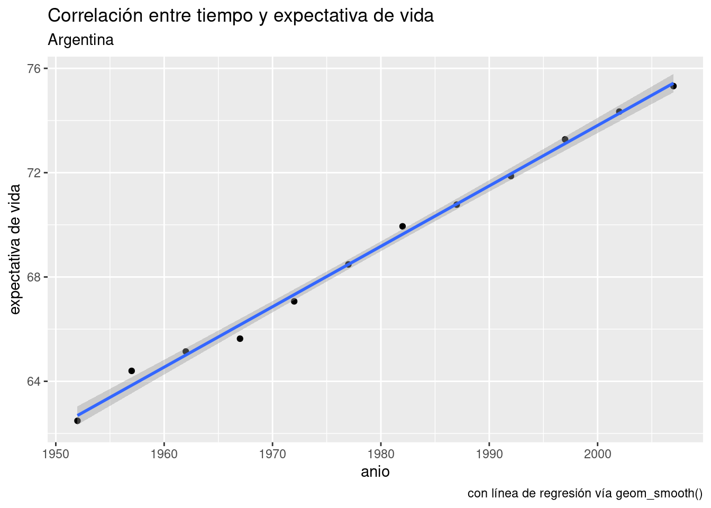
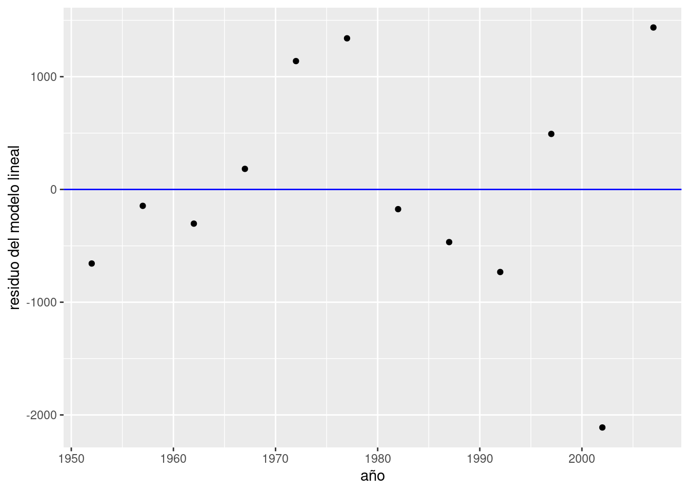
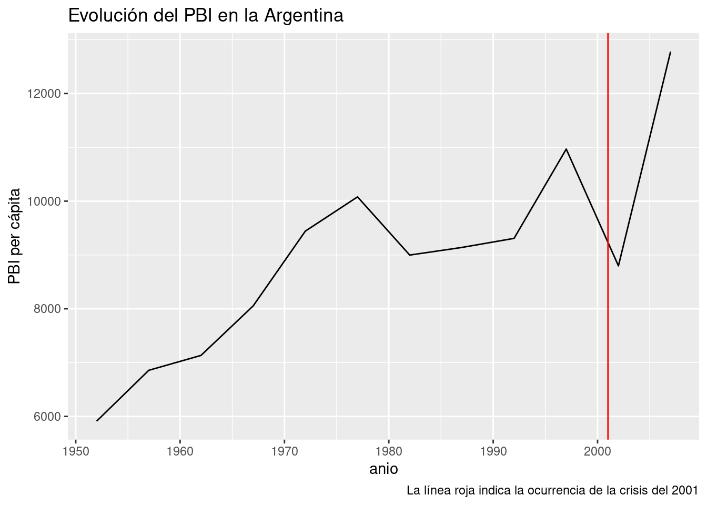
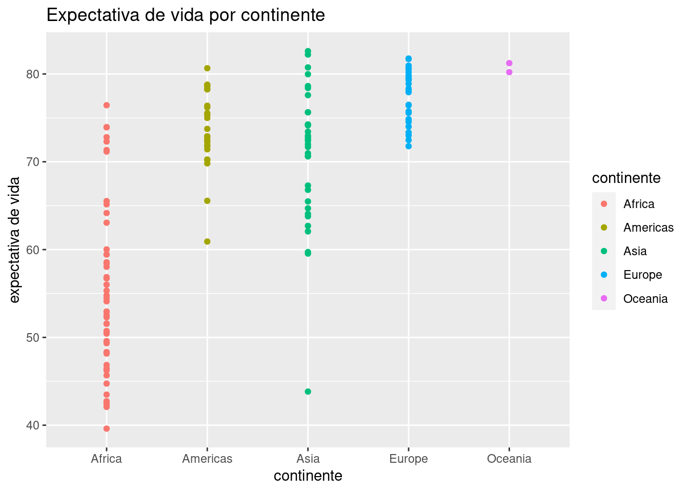
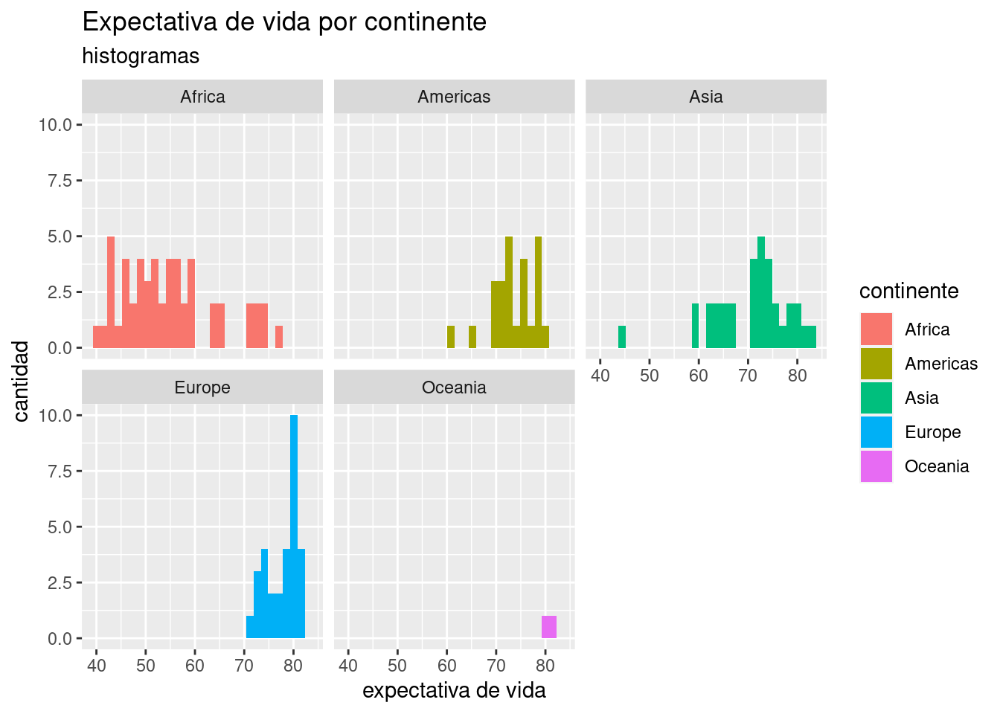
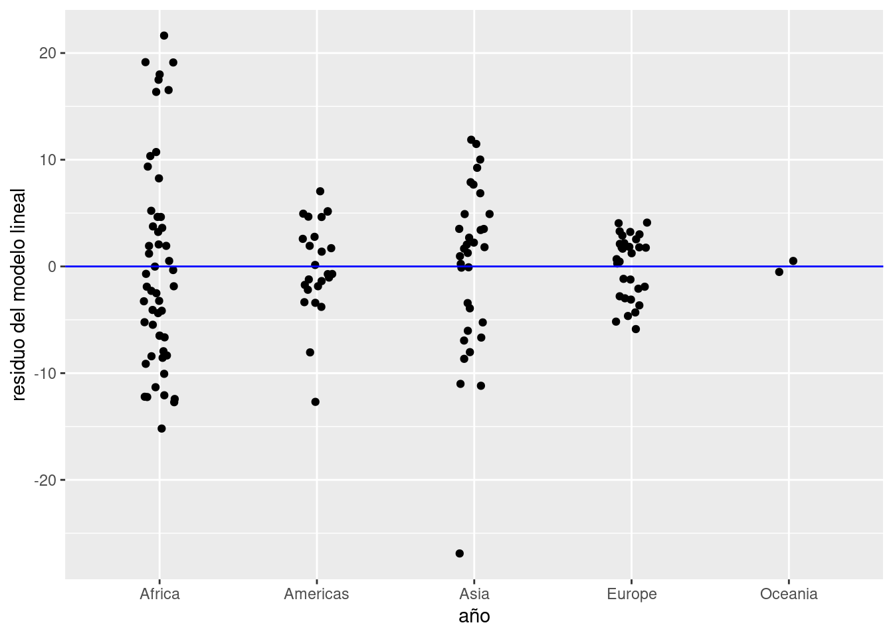

La encarnación más sencilla de la regresión lineal es la simple o univariada. Tenemos nuestra variable \(y\), numérica, y una sola variable predictora \(x\), que puede ser numérica o categórica.
Para poner en práctica los conceptos repasados en este capítulo, vamos a tomarnos un recreo de los datos de Buenos Aires, haciendo un zoom out hacia las escalas de país, continente y el planeta entero. Contamos con un dataset muy prolijo e interesante recopilado por Gapminder (www.gapminder.org), una organización que busca “hacer comprensible al mundo en base a estadísticas confiables”.
Descarguemos el dataset y echémosle un vistazo como ya sabemos hacer:
data_mundial <- read.csv("https://bitsandbricks.github.io/data/gapminder.csv")
summary(data_mundial)## pais continente anio expVida pobl PBI_PC
## Length:1704 Length:1704 Min. :1952 Min. :23.60 Min. : 60011 Min. : 241.2
## Class :character Class :character 1st Qu.:1966 1st Qu.:48.20 1st Qu.: 2793664 1st Qu.: 1202.1
## Mode :character Mode :character Median :1980 Median :60.71 Median : 7023596 Median : 3531.8
## Mean :1980 Mean :59.47 Mean : 29601212 Mean : 7215.3
## 3rd Qu.:1993 3rd Qu.:70.85 3rd Qu.: 19585222 3rd Qu.: 9325.5
## Max. :2007 Max. :82.60 Max. :1318683096 Max. :113523.1Con el poder de summary(), podemos decir unas cuantas cosas acerca de nuestros dataset. Las observaciones son de un país, su continente, un año determinado y su expectativa de vida, población y… ¿PBI_PC?. Esa última es PBI per cápita. Que, según parece, hay 12 observaciones por país. Que el rango de años es de 1952 a 2007. Que a lo largo de esos años, la menor expectativa registrada ha sido de 23 años (¡uf!) y la mayor de 82. Que el país menos poblado en el dataset ha tenido apenas más de 60.000 habitantes, mientras que el más populoso ha alcanzado los 1300 millones.
Notemos también que la variable que representa el año de cada medición aparece nombrada como “anio”. Esto se debe a la necesidad de evitar que en el nombre de la variable aparezca la “ñ”, letra que los hispanohablantes apreciamos pero suele traer problemas cuando se cruza con sistemas informáticos.
Hagamos nuestra pregunta: ¿Cómo ha se relaciona el paso del tiempo (variable explicativa) con la expectativa de vida en la Argentina?
Para contestar, primero filtremos los datos que nos interesan:
## pais continente anio expVida pobl PBI_PC
## 1 Argentina Americas 1952 62.485 17876956 5911.315
## 2 Argentina Americas 1957 64.399 19610538 6856.856
## 3 Argentina Americas 1962 65.142 21283783 7133.166
## 4 Argentina Americas 1967 65.634 22934225 8052.953
## 5 Argentina Americas 1972 67.065 24779799 9443.039
## 6 Argentina Americas 1977 68.481 26983828 10079.027
## 7 Argentina Americas 1982 69.942 29341374 8997.897
## 8 Argentina Americas 1987 70.774 31620918 9139.671
## 9 Argentina Americas 1992 71.868 33958947 9308.419
## 10 Argentina Americas 1997 73.275 36203463 10967.282
## 11 Argentina Americas 2002 74.340 38331121 8797.641
## 12 Argentina Americas 2007 75.320 40301927 12779.380Como dijimos en el capítulo de visualización, los scatterplots son útiles para mostrar la relación entre dos variables. Usemos uno para visualizar la relación entre año y expectativa de vida en Argentina, para intentar anticipar los resultados de la regresión lineal.
ggplot(data = data_arg) +
geom_point(aes(x = anio, y = expVida)) +
labs(title = "Correlación entre tiempo y expectativa de vida",
subtitle = "Argentina",
y = "expectativa de vida")Bien, no necesitamos recurrir a la matemática para saber que tiempo y expectativa de vida están correlacionadas en forma positiva. Esto es, el incremento de una unidad de tiempo en general (o siempre, en este caso) resulta en el incremento de la expectativa de vida. Una correlación negativa sería lo opuesto: que el incremento de la variable explicativa estuviera asociado a un decremento de la variable explicada. Además del signo de una correlación, otra medida importante es su intensidad. La intensidad de una correlación va de -1 (correlación negativa total) a 1 (correlación positiva total). Una correlación de cero significa que las dos variables son por completo independientes. En en ese caso, saber cuánto vale una no nos ayuda a estimar el valor de la otra.
Obtener la correlación entre dos variables es fácil. La función cor() toma dos vectores dos secuencias de valores, y los compara para determinar su grado de correlación. Recurriendo al truco que ya usamos alguna vez, usamos el formato “dataframe$columna” para extraer las columnas de nuestro dataframe que necesitamos:
## [1] 0.9977816¿A partir de qué valor consideramos que existe una correlación apreciable? La verdad es que no hay una regla a seguir, pero inventemos una. Si el valor absoluto de la correlación es..
- de 0,7 a 1: de fuerte a total
- de 0,5 a 0,7: de moderada a fuerte
- de 0,3 a 0,7: de débil a moderada
- menor a 0,3: de nula a débilEl valor que obtuvimos se acerca mucho a 1, la correlación casi total. OK, el paso de los años y la expectativa de vida en la Argentina están correlacionados de forma intensa, pero aún desconocemos algo quizás más importante: un valor preciso del “efecto” que el paso de cada año tiene sobre la expectativa de vida. Eso es lo que vamos a determinar con la regresión lineal. Usamos la palabra “efecto” entre comillas para aclarar una de las limitaciones del modelado estadístico: podemos probar correlación, pero no causalidad. Es decir, no podemos probar que una variable causa a la otra; en todo caso, probamos que se mueven juntas y en base a ello podríamos diseñar un experimento que permita comprobar causalidad.
Vamos a la regresión lineal entonces, para medir de una buena vez la correlación entre tiempo y expectativa de vida. Usamos la función lm() (por “linear model”), así:
¡Eso es todo! Hemos construido un modelo estadístico; ahora tenemos que aprender a usarlo. Obsérvese que volvió aparecer el simbolillo que denota una fórmula, ~. Usado como primer argumento de lm(), significa “expVida vs año”, es decir “estimar el efecto en la variable expVida cuando incrementa el valor de año”, usando los datos contenidos en el dataframe data_arg.
El resultado de lm(), que hemos guardado dentro de la variable modelo_exp es un tipo de objecto con el que no hemos trabajado hasta ahora. No es un dataframe, sino una lista que contiene distintos atributos del modelo estadístico. No hace falta preocuparnos por eso ahora.
Retomando nuestra pregunta… ¿cuál es el efecto? Nos lo dice el modelo cuando lo escribimos.
##
## Call:
## lm(formula = expVida ~ anio, data = data_arg)
##
## Coefficients:
## (Intercept) anio
## -389.6063 0.2317Ahí está. En nuestro modelo, el coeficiente de la variable año (o “anio”, para usar el nombre con el que aparece en los datos) es 0.2317. Significado: incrementando en una unidad la variable año, la variable expectativa de vida se incrementa en 0.2317. Dicho de otra manera, por cada año que pasa la expectativa de vida en la Argentina aumenta casi 3 meses.
El otro coeficiente que aparece, “(Intercept)” es la intersección. En términos de interpretado del modelo, la intersección rara vez tiene utilidad. Para lo que sí sirve es para trazar la línea que permite “predecir” valores para años en los que no tenemos observaciones. Recordemos la fórmula que define una línea recta:
\[ y = a + b \times x \]
A cada punto en \(x\) le corresponde un valor en \(y\) que se obtiene multiplicando a \(x\) por la pendiente, \(b\), y sumando la intersección, \(a\). Se le llama “intersección” u “ordenada al origen” porque es el valor donde la recta intersecta con el eje de las y: cuando \(x\) vale \(0\), la fórmula nos da \(y = b\).
En una regresión lineal, el “modelo” que creamos es precisamente eso: una línea. Tan simple como eso. Lo que hace a esta linea tan potente, es que la podemos usar bola de cristal: para saber cuanto valdría la variable dependiente ante un valor determinado de la variable predictora, revisamos por donde pasa la línea.
Lo podemos visualizar con ayuda de ggplot(), que por supuesto incluye una función para trazar líneas. Parámetros necesarios: intercept (intersección) y slope (pendiente). Usamos los respectivos valores que nos indica el modelo, -389.6063 y o.2317.
ggplot(data = data_arg) +
geom_point(aes(x = anio, y = expVida)) +
labs(title = "Correlación entre tiempo y expectativa de vida",
subtitle = "Argentina",
y = "expectativa de vida",
caption = "con línea de regresión") +
geom_abline(aes(intercept = -389.6063, slope = 0.2317), color = "blue")Aquí no vemos más que los datos que ya teníamos. Pero proyectemos la línea hacia el futuro. Con xlim() e ylim() podemos definir a mano los límites de nuestro gráfico, haciéndolo ir más allá del rango de los datos que tenemos. La línea sigue siendo la misma, sólo que ahora podemos ver hacia donde va.
ggplot(data = data_arg) +
geom_point(aes(x = anio, y = expVida)) +
labs(title = "Correlación entre tiempo y expectativa de vida",
subtitle = "Argentina",
y = "expectativa de vida",
caption = "con línea de regresión") +
geom_abline(aes(intercept = -389.6063, slope = 0.2317), color = "blue") +
xlim(c(1950, 2030)) +
ylim(c(60, 85))Ahí está la predicción. Según nuestro modelo, para el año 2030 la expectativa de vida en la Argentina habrá superado los 80 años.
Es hora de dar una definición oficial para una regresión lineal, y es esta: es la línea que describe la ecuación:
\[ \hat{y} = b_0 + b_1 \times x \] Obsérvese que se trata de la ecuación de una recta, \(y = a + b \times x\), con otros nombres. En voz alta, se leería así “Cada predicción del valor de y, llamada \(\hat{y}\), se obtiene multiplicando a la variable predictora \(x\) por su coeficiente \(b_1\) y sumándole el valor de la intersección \(b_0\)”. En otras palabras, a cada valor de \(x\) (las observaciones de la variable explicativa) le corresponde un punto en la recta trazada por el modelo. La altura sobre la recta de las \(y\) para ese punto es el valor predicho para la variable dependiente.
Ya que estamos, aprendamos otro truco. ggplot() puede agregar a nuestros scatterplots una capa con la línea de la regresión lineal, en forma automática. La función geom_smooth() se usar para explicitar patrones en los datos. Tal como otras de la familia ggplot, espera que se le diga que variables asignar a x e y, más un parámetro method con el método solicitado para trazar una línea de tendencia. Aquí usamos method = "lm" por linear model, el modelo lineal.
ggplot(data = data_arg) +
geom_point(aes(x = anio, y = expVida)) +
labs(title = "Correlación entre tiempo y expectativa de vida",
subtitle = "Argentina",
y = "expectativa de vida",
caption = "con línea de regresión vía geom_smooth()") +
geom_smooth(aes(x = anio, y = expVida), method = "lm")## `geom_smooth()` using formula 'y ~ x'
Hacer una regresión lineal se trata de encontrar la línea que atraviesa nuestra nube de puntos de modo tal que la suma de las distancias de cada punto a la línea sea la menor posible. Es un problema matemático que puede resolverse con distintas técnicas (álgebra lineal, geometría, etc) que no vamos a discutir aquí. Confiaremos en R para hacer los cálculos.
En la relación año - expectativa de vida las distancias entre los puntos (las observaciones) y la línea (el modelo) son muy pequeñas. Eso indica que el modelo describe con gran precisión la dinámica de la relación entre las variables analizadas.
En general, es inusual encontrar una correlación tan nítida entre variables “en la vida real”, sobre todo cuando estudiamos procesos complejos cuyo comportamiento describe patrones más complejos que una relación lineal pura. No hace falta ir demasiado lejos para encontrar un ejemplo. Usando el mismo dataset, visualicemos un scatterplot de PBI vs año, agregando la línea de regresión para:
ggplot(data = data_arg) +
geom_point(aes(x = anio, y = PBI_PC)) +
labs(title = "Correlación entre PBI y expectativa de vida",
subtitle = "Argentina",
y = "PBI per cápita") +
geom_smooth(aes(x = anio, y = PBI_PC), method = "lm")## `geom_smooth()` using formula 'y ~ x'Sigue siendo evidente una fuerte tendencia lineal, pero las observaciones ya no se ciñen de forma tan estrecha a la línea idealizada de la regresión.
Obtengamos el modelo del PBI per cápita de la Argentina en relación al paso del tiempo:
##
## Call:
## lm(formula = PBI_PC ~ anio, data = data_arg)
##
## Coefficients:
## (Intercept) anio
## -162888.14 86.81Tal como indicaba el scatterplot, obtuvimos un coeficiente positivo. Según el modelo, cada año que pasa resulta en un incremento de 86 dólares en el PBI per cápita del país. Sin embargo, sabemos que no en todos los años se cumple al pie de la letra tal incremento. ¿Debería preocuparnos eso? Una parte importante del análisis basado en regresiones es revisar los desvíos, y decidir si ameritan buscar una explicación. Para ello, lo mejor es empezar por prestar atención a los residuos.
Los residuos, en la jerga estadística, no son otra cosa que las diferencias encontradas entre el valor que predice un modelo para una variable y el valor observado en la práctica. Es decir, el valor para cada punto de \(y - \widehat{y}\). Los residuos representan el desvío de cada observación respecto al valor “esperado” por el modelo.
Cuando los desvíos son pequeños, es decir cuando los residuos son pequeños, decimos que nuestro modelo se ajusta bien a los datos observados. Cuando los residuos son grandes ocurre lo contrario, y quizás deberíamos buscar otra forma de describir, de modelar, la relación entre las variables.
Prestemos atención a los residuos de nuestro modelo de PBV vs. tiempo. Podemos extraer los residuos usando la función residuals(),
## 1 2 3 4 5 6 7 8 9 10
## -656.9180 -145.4351 -303.1836 182.5450 1138.5722 1340.5021 -174.6855 -466.9699 -732.2809 492.5240
## 11 12
## -2111.1755 1436.5051agregarlos a nuestro dataframe,
y visualizarlos comparados con una línea que indica el cero, trazada por geom_hline(). Los residuos cercanos a ese valor son los que corresponden a observaciones a las que el modelo se ajusta bien.
ggplot(data_arg) +
geom_point(aes(x = anio, y = residuo_ml)) +
geom_hline(yintercept = 0, col = "blue") +
labs(x = "año", y = "residuo del modelo lineal")
Siempre podemos esperar una cierta divergencia entre las predicciones y los valores observados, por lo que los residuos siempre tendrán (en general) un valor distinto a cero. Lo que quisiéramos ver en un gráfico como este es que los residuos se distribuyan al azar, sin indicios de patrones sistemáticos. Si así fuere, podemos considerar que nuestro modelo es adecuado.
¿Cómo determinamos que no exhiben patrones sistemáticos? Una vez mas, se trata de una evaluación bastante subjetiva, y cada quien estará conforme dependiendo del contexto y la experiencia previa. Aún así podemos argumentar en favor de la adecuación del modelo cuando:
Por lo visto, nuestro modelo cumple con 1. pero no con 2, ya que la magnitud de los residuos parece crecer con el paso de los años. Entre todos los puntos, los mayores transgresores son los últimos y corresponden a los años 2002 y 2007. El valor del PBI per cápita observado en 2002 año resultó ser más de 2000 dólares menor al esperado por el modelo, todo un derrumbe. ¿A qué se debe tanta discrepancia? Nuestro modelo no tiene la culpa, es que la realidad tiene sus bemoles. A fines del 2001 la Argentina sufrió la peor crisis financiera de su historia, factor que explica la brusca caída del PBI que revirtió la tendencia al crecimiento de décadas anteriores. Una función que aún no habíamos usado, geom_line(), nos va a permitir trazar una línea que siga el PBI a lo largo de los años, y otra novedad, geom_vline(), se encargará de agregar una línea vertical que señale el año de la crisis:
ggplot(data_arg) +
geom_line(aes(x = anio, y = PBI_PC)) +
geom_vline(aes(xintercept = 2001), color = "red") +
labs(title = "Evolución del PBI en la Argentina",
y = "PBI per cápita",
caption = "La línea roja indica la ocurrencia de la crisis del 2001")
Es claro que el modelo se beneficiaría de poder tener en cuenta la irrupción de las crisis en el país. Esto se lograría agregando una variable categórica para cada año, que indique si se trata de un período de crisis. En ese caso, seria un modelo de regresión lineal múltiple (con más de una variable explicativa), incorporando una variable explicativa numérica y otra categórica. Que lástima que nuestro dataset no incluye la variable de las crisis financieras. Si quisiéramos mejorar nuestro modelo con esa información, no nos quedaría mas remedio que salir a buscar los datos. Con suerte, alguien los habrá recopilado por nosotros, y si no, tendríamos que hacerlo por nuestra cuenta. ¡La investigación es un sacerdocio!
En aras de la simplicidad, sigamos practicando con los datos disponibles.
El dataset con datos del mundo provisto por Gapminder incluye dos variables categóricas: país y continente. Con 142 países representados, podemos descartar a la primera como variable para realizar un modelo -recordemos que para entender la interrelación de variables, cuantas menos involucremos mejor. Los cinco continentes habitados representan un conjunto mucho más práctico, por lo que la pregunta será “¿Cuánto incide el continente en la expectativa de vida de los países?”
Comencemos por explorar los datos tomando las observaciones más recientes, las de 2007.
data_mundial_2007 <- data_mundial %>% filter(anio == 2007)
ggplot(data = data_mundial_2007) +
geom_point(aes(x = continente, y = expVida, color = continente)) +
labs(title = "Expectativa de vida por continente",
y = "expectativa de vida")
Ya podemos vislumbrar que el continente incide en la expectativa de vida, con África sufriendo los números más bajos. La profusión de puntos hace que muchos terminen superpuestos, haciendo imposible determinar cuántos ocupan cada posición (un problema llamado overplotting en inglés). Una variante de geom_point() llamada geom_jitter() resuelve este problema al “sacudir” los puntos, sumando a cada uno un pequeño valor al azar para que se separe de los que comparten su posición. Es un buen ejemplo de la paradoja por la cual reducir la precisión de la información a veces permite entender mejor lo que está ocurriendo. Usamos geom_jitter() igual que geom_point():
ggplot(data = data_mundial_2007) +
geom_jitter(aes(x = continente, y = expVida, color = continente)) +
labs(title = "Expectativa de vida por continente",
y = "expectativa de vida")Algún ojo avizor habrá notado que la clasificación por color no es necesaria, ya que el continente ya está señalado por su posición en el eje de las x. El color cumple aquí una función más que nada cosmética, en pos de hacer al gráfico maś atractivo a la vista.
También podemos visualizar la diferencia de distribución de expectativa de vida de los países, con un histograma facetado por continente:
ggplot(data = data_mundial_2007) +
geom_histogram(aes(x = expVida, fill = continente)) +
facet_wrap(~continente) +
labs(title = "Expectativa de vida por continente",
subtitle = "histogramas",
x = "expectativa de vida",
y = "cantidad")## `stat_bin()` using `bins = 30`. Pick better value with `binwidth`.
Bien, estamos convencidos de que hay una relación entre continente y expectativa de vida, aunque no la hemos cuantificado. Para eso, recurrimos a una regresión lineal con variable explicativa categórica. Se obtiene de la misma manera que antes, no hay cambios en la forma de invocar lm() por el hecho de que la variable ahora sea categórica en vez de numérica.
##
## Call:
## lm(formula = expVida ~ continente, data = data_mundial_2007)
##
## Coefficients:
## (Intercept) continenteAmericas continenteAsia continenteEurope continenteOceania
## 54.81 18.80 15.92 22.84 25.91¿Qué ocurrió aquí? lm() inspeccionó el contenido de la variable “continente” y encontró cinco niveles o categorías. Tomó el primero en orden alfabético, “Africa”, como línea de base. El primer coeficiente de la regresión (la intersección) es el promedio de la expectativa de vida en África. Para cada una de las categorías restantes, el coeficiente representa la diferencia respecto a África de la expectativa de vida promedio en cada uno de los otros continentes. He allí la cuantificación: para un país en las Américas, podemos esperar -en promedio- una expectativa de vida que supera en 18.8 años la de los países africanos. Para un país en Asia, son 15.92 los años adicionales, y así.
Prestemos atención a los residuos. Agregamos al dataframe una columna con el residuo para cada observación,
y graficamos la dispersión de los residuos en torno a cero, el valor ideal:
ggplot(data_mundial_2007) +
geom_jitter(aes(x = continente, y = residuo_ml), width = 0.1) +
geom_hline(yintercept = 0, col = "blue") +
labs(x = "año", y = "residuo del modelo lineal")
Notamos que:
Con la magia de los verbos de transformación que sabemos, aislemos a los países en Asia con menor expectativa de vida para identificar al outlier.
## pais continente anio expVida pobl PBI_PC residuo_ml
## 1 Afghanistan Asia 2007 43.828 31889923 974.5803 -26.900485
## 2 Iraq Asia 2007 59.545 27499638 4471.0619 -11.183485
## 3 Cambodia Asia 2007 59.723 14131858 1713.7787 -11.005485
## 4 Myanmar Asia 2007 62.069 47761980 944.0000 -8.659485
## 5 Yemen, Rep. Asia 2007 62.698 22211743 2280.7699 -8.030485
## 6 Nepal Asia 2007 63.785 28901790 1091.3598 -6.943485Se trata de Afganistán. Como explicación, uno piensa de inmediato en las largas guerras libradas en ese territorio, y en particular la invasión por parte de los Estados Unidos en 2001 -¡otra vez ese año!-. Podemos verificarlo con un gráfico que muestre la evolución de la expectativa de vida según los años.
data_afganistan <- data_mundial %>% filter(pais == "Afghanistan")
ggplot(data_afganistan) +
geom_line(aes(x = anio, y = expVida)) +
labs(title = "Expectativa de vida en Afganistán",
y = "expectativa de vida")Vaya sorpresa. A pesar de ser en extremo baja comparada con el resto de Asia, la expectativa de vida en Afganistán en el 2007 es la más alta de la historia, y no sólo eso: ha aumentado con rapidez después del año de la invasión. ¿A qué podemos atribuir entonces la bajísima expectativa de vida? Teniendo en cuenta que el país ha sufrido conflictos bélicos en forma continua desde fines de los ’70, podría tratarse de una tragedia histórica: los años que faltan son los que el país habría alcanzado si las guerras no hubieran alterado su ritmo de progreso.
Dependiendo del esfuerzo que requiera determinar la causa de un outlier, una alternativa razonable es dejarlo de lado. Es un poco cruel, pero realista: cuando tenemos cientos, miles o millones de observaciones, hacer una “poda” de los valores extremos que nuestros modelos no pueden explicar termina siendo la opción más razonable. Dedicar recursos limitados a la caza de una explicación o a complejizar el modelo agregando variables hasta lograr predecir los outliers no tiene sentido cuando se trata de casos aislados y fortuitos. Por otra parte, eliminarlos antes de tiempo podría hacernos ignorar los casos más interesantes de un dataset, los que más información podrían revelar. Existen tratados completos dedicados a la cuestión de como manejar los outliers, pero el conocimiento de dominio es la principal herramienta para decidir que hacer ante casos inusuales… como siempre.